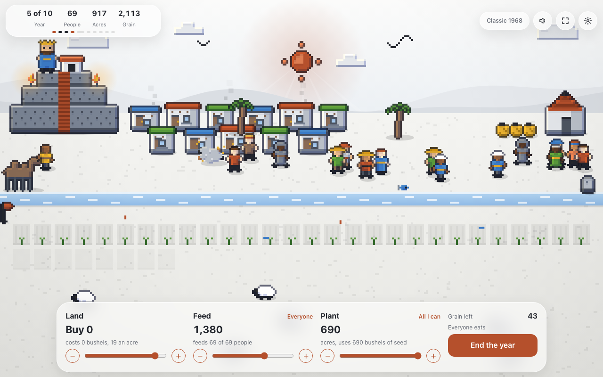
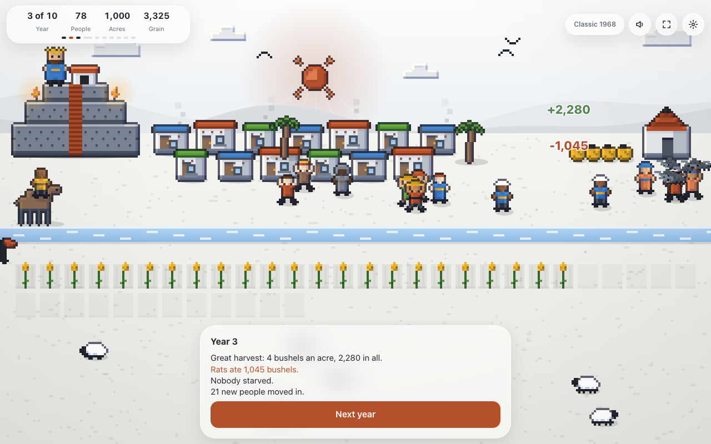
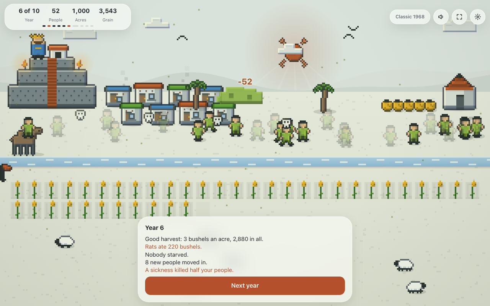
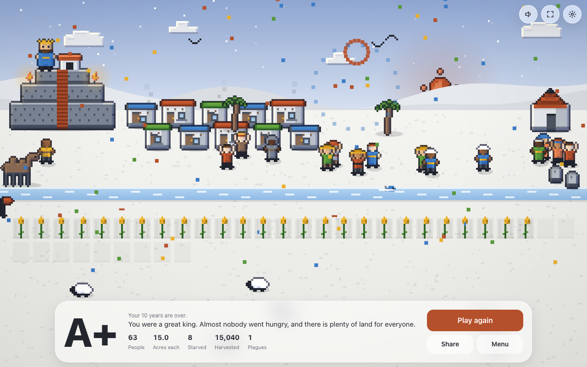

That is the real game up there.
Press start and play. You get 100 people, 1,000 acres and a barn full of grain. Each year you choose how much land to buy, how much to feed your people and how much to plant. Then you watch what happens.
The trailer. Every second of it is the real Mac app.
It all shows
Good harvest and the crowd cheers. Rats run at the barn. Starve people and you see the ghosts, and the graves stay.
A story with choices
Traders, floods, a greedy king next door, a woman who reads the stars. Ten events, two choices each.
Today's game
Everyone who plays today gets the same luck. Same harvests, same rats. Compare grades.
The 1968 game, untouched
Classic mode is the original rules with nothing added. Three levels for the story: easy, normal, hard.
Watch the robot
A robot king plays a whole game while you watch. It gets an A+ in 878 of 1,000 games. Beat it.
Music made of math
The tune and every sound are worked out by a short program. No recordings. Turn it off any time.
On your Mac and your iPhone.
The app is native on both. It works with no internet, saves your game each year, and collects nothing. The App Store version is on its way: free for its first week, then one dollar, once. The game on this page stays free.




Where it came from.
In 1964 a teacher named Mabel Addis and a programmer named William McKay made The Sumer Game for school kids. In 1968 Doug Dyment wrote his own short version, Hamurabi, on a computer with almost no memory. In 1973 David Ahl put it in his book 101 BASIC Computer Games, and people typed it into home computers for years.
This one is a fresh build. The rules are the 1968 rules. The code, the art, the music and the story are new, and nothing is copied from the old versions. Thank you to the people who made the first ones.
The code is open under the MIT License. Take it, read it, change it.
Help.
Stuck, found a bug, or have an idea? Write to trommatic@icloud.com. How to play is under the gear button in the game.